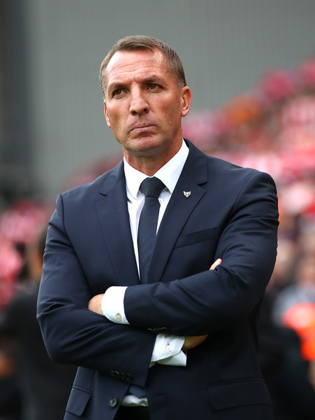

coach
Brendan Rodgers (born 26 January 1973) is a Northern Irish professional football manager and former player who is the manager of Premier League club Leicester City. Rodgers began his career as a defender at Ballymena United, where he stayed until he was signed by Reading at the age of 18, although a genetic knee condition forced him to retire at age 20. He remained at Reading as a coach and then academy director, and continued to play non-league football at Newport, Witney Town and Newbury Town for several years. After a period travelling around Spain to study coaching methods, he was invited by José Mourinho to leave Reading and join Chelsea as youth manager in 2004, later being promoted to reserve manager in 2006.
In 2008, he was appointed manager of Watford, where he remained until he accepted an offer to become manager of his former club Reading in 2009. He left the club by mutual consent after some disappointing results six months later. He returned to management with Swansea City in 2010, leading the club to promotion to the Premier League, the first Welsh team ever to do so, before guiding them to finish 11th the following season. On 1 June 2012, Rodgers accepted an offer to become the new manager of Liverpool, whom he led to runners-up position in the league in the 2013–14 season before his dismissal in October 2015. He became manager of Celtic in May 2016 and led Celtic to an undefeated domestic season in his first year, and trebles in both of his first two seasons. He left Celtic for Leicester City in February 2019.